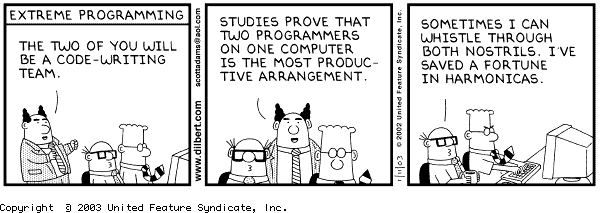

Week 5 Cultural Blog - Pair Programming & Feedback

Coming into DBC, pair programming was my biggest fear. Being a bit of an introvert, I had nightmares about how I would be able to take all the social interaction. Especially over the Internet with people that I had never met before.
I also feared looking like an idiot in front of my classmates. I have a tendency to avoid situations where I can look stupid so pairing scared me. I can handle the home work, the schedule, the dedication, and pretty much anything else you throw at me but pairing is Kryptonite.
I agonized over what everyone would think of me. I visualized the worse case scenarios or pairing sessions where my partner and I would do nothing but fight. I imagined horrible feedback that would get me kicked out of DBC. I feared slowing some one down. I feared being slowed down myself. I feared I would have nothing to contribute.
The Reality
Then I paired. I don't think I have had a bad session yet. I was blown away that even when I wasn't on the same level as my partner, we still solved problems much quicker than on our own and we almost always learned something new. I was also surprised that I could learn so much by seeing how others solved problems.
I particularly enjoyed helping others when my knowledge allowed me to. I found that as I explained things I understood, I really solidified those concepts within myself. It is very rewarding to realize that you understand a concept well enough to teach it to another person. I find that I really like these moments and they are a huge boost to my drive to learn more.
Difficulties
I was also shocked to realize that the frustrating and difficult parts of pairing had nothing to do with my partners. In fact, the most frustrating thing that I have found is the tools available for pairing via the Internet. Stypi is a great idea but it almost never works. Screen sharing has it's pluses but it is often slow if you or your partner's connection is slow. It also does not make for an easy change in the roles of navigator and driver.
Feedback
I love the feedback system that DBC provides and I can see its potential. I'm always encouraged to receive positive and kind feedback through the system. I haven't received any negative or hurtful feedback yet and I'm always uplifted by what I read. I'm pleased to find that I'm not as big of an idiot as I feared I was.
I started out phase 0 with jumping into pairing sessions with little to know idea what we would work on. I think this was a common theme as most of my partners where the same at first. As gave and received feedback, my sessions started to evolve from unorganized to well planed and thought out sessions. My communication and planning skills have improved over the last 5 weeks as a result.
Writing Feedback
Writing feedback has to be one of the harder parts of pairing. I can't tell you how many times I've sat in front of the feedback form, racking my brain, trying to come up with some actionable feedback for a partner. Kindness and willing to work hard have yet to be a problem and giving feedback on programming is not always the easiest when you yourself don't always know if your partner is doing something wrong. Finding actionable feedback for a partner is confounds me more often than not.
Reading and rating other's feedback leads me to believe that I'm not the only one in this boat. To come across an actual actionable piece of feedback is rare. I'm hoping as we continue on our journey and learn more that this process will become much easier. I can only hope that the more knowledge we process the easier it will be to give constructive and actionable feedback on ways to be better programmers.
Conclusion
So here we sit at the end of week 5 and I can honestly say that I don't fear pairing anymore. I've met some great people and many of them have helped me learn and grow. The entire process has been an eye opener and I can see the importance of working together and providing feedback. It's this help from a community that I've really been missing from my on going attempts to self teach myself programming. Insights from others are invaluable and do wonders. I've also found that fellow classmates can more often than not teach me concepts that I struggle with quicker than reading any documentation or stack overflow post.